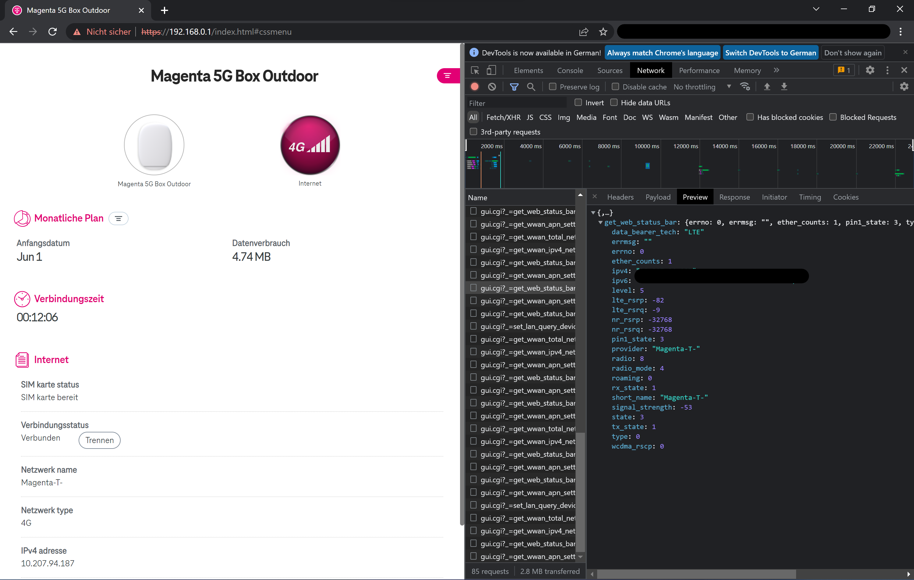

Hallo zusammen,
ich habe seit heute die Magenta 5G Outdoor-Box - da 5G erst in den kommenden Wochen bei mir ausgebaut wird surfe ich aktuell noch übers LTE-Netz.
Beim Ausrichten der Outdoor-Unit ist mir dann aufgefallen, dass ich nirgens mehr die detaillierten Signaleinstellungen checken kann - weder in der Web-Oberfläche noch in der App.
Die blinkenden grün/roten Lämpchen & Signal-Balken helfen halt auch nur begrenzt weiter.
Hab ich hier was übersehen oder bietet die Outdoor-Box wirklich keine genauen Informationen bzgl. Signalqualität?
Besten Dank!
LG,
Wolfgang
Hey
@itsw_92
Es gibt diese Daten und diese Daten werden auch an dein Endgerät übertragen, aber nicht in der Weboberfläche oder der App ausgegeben.
Auf einem Computer können diese Daten allerdings eingesehen werden.
Dazu muss die Weboberfläche in einem Browser offen und angemeldet sein.
Über die Untersuchen-Funktion (rechtsklick -> Untersuchen) können die Entwickleroptionen geöffnet werden.
In den Entwickleroptionen muss dann auf den Netzwerk- bzw. Netzwerkanalyse-Tab gewechselt werden.
Dann die kurz warten oder die Seite aktualisieren.
Die Details verstecken sich dann in der Datei gui.cgi?_=get_web_status_bar_0.0000000000000000.
Es werden laufend neue Versionen Version der Datei übertragen.
Wenn die Datei offen ist, muss auf den Preview Tab gewechselt werden und im Anschluss auf den kleinen Pfeil vor "get_web_status_bar" geklickt werden.

LG NTM
Alles klar - vielen Dank für die Beantwortung trotz doppelpost - hab extra nach dem Thema gesucht aber irgendwie nicht gefunden ..
Eine Frage hätte ich noch: unterstütz die Outdoor-Einheit auch 4G+ oder "nur" normales 4G -> mit dem alten Router hatte ich immer 4G+ und jetzt steht nurmehr 4G?
Besten Dank!
Hey @itsw_92
Ja, wird in der Software aber nicht unterschieden.
Auch nicht alle Smartphones unterscheiden zwischen 4G+ und 4G.
LG NTM
{kind=link}